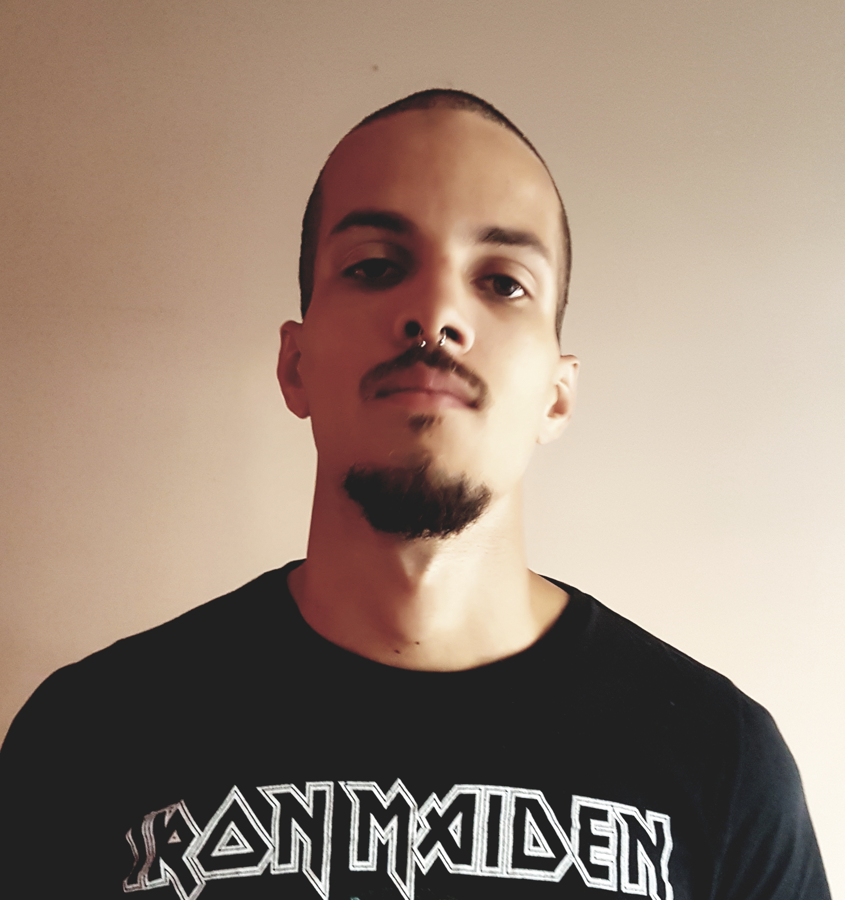
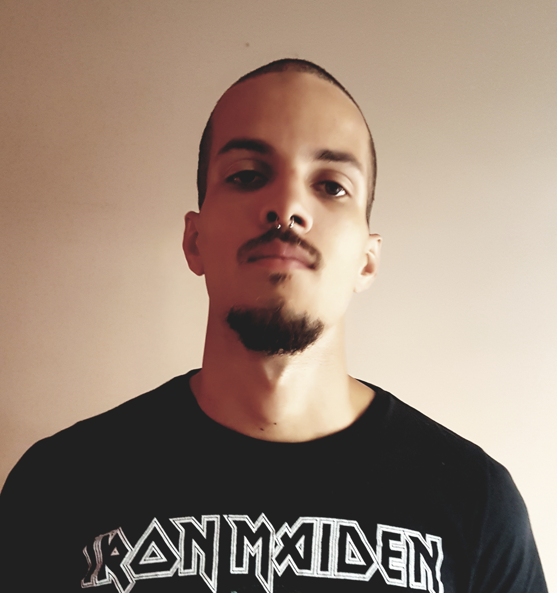

Augusto junio vieira da silva
Brasileiro, 25 anos, Solteiro.
Informações Pessoais
- CPF: 120.523.916-22
- RG: MG-17.887.842
- Data de nascimento: 08/06/1994
- Rua: Radialista Decio Silveira nº 202
- Bairro: Céu Azul
- CEP: 31580-590
- Belo Horizonte - MG - Brasil
Contato
- Cel: (31) 97506-9204 ☎
- E-mail: augusto_jvs@hotmail.com
Redes sociais:
Objetivo
Estágio, área de análise e desenvolvimento de sistemas.
Resumo Profissional
Venho da área de terraplanagem e no momento trabalho como motorista de aplicativo e retomei meus estudos no inicio de 2018 e atualmente estou cursando sistemas de informação no turno da noite. como profissional sou dedicado e muito focado em meus estudos e objetivos e estou em busca de uma oportunidade de estágio.
Formação
Escolaridade
Ensino médio (2º. Grau) completo.
Graduação
Sistemas de Informação - Una - Aimorés.
Turno: Noturno.
Período: 4º semestre.
Conclusão: dezembro de 2021 - Cursando.
Cursos Complementares
- Informática avançada - Cedaspy.
- (julho de 2011) - Concluído.
- Git e GitHub – Udemy.
- (fevereiro de 2019) – Concluído.
Idioma
Inglês básico.
Outros objetivos
Pretensão salarial
Faixa de R$ 750,00 - 1.100,00 (Real).
Região de interesse
Preferência pela região de Belo Horizonte/Minas Gerais, ou num raio de 30 km.
Informações complementares
Possuo conhecimento intermediário sobre o pacote Office, sei formatar computadores e tenho conhecimento básico em Linux.